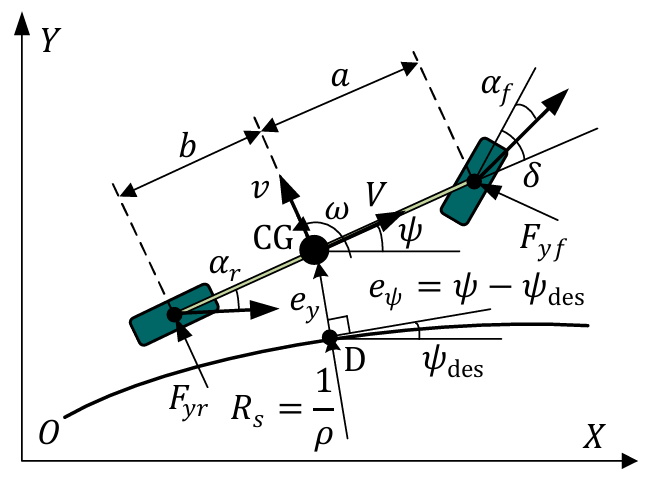

MPC模型推导
前言
本文基于人机共驾型智能汽车的共享控制方法研究进行学习分析，虽然文章中存在一些错误(Ac不可逆却使用其逆进行离散化等)，但是对模型的整体的推导并无大碍。为了和学长学姐的已有框架一致，对文章中的模型做了一些调整与简化(调整了状态量的选择，删去曲率约束)。本文适合对MPC原理基本了解但完全未接触其模型建立过程的人群。
模型推导与建立
文章使用道路坐标下的车辆线性二自由度动力学模型，具体如下图：  a是车辆质心距前轴距离、b是车辆质心距后轴距离。在车辆不发生明显质心转移的情况下，一般认为这两个量为常数。V是车辆的纵向速度、v是车辆的横向速度、是车辆的横摆角速度，这三个量构成描述车辆运动的速度量。 \(\alpha_f\)和\(\alpha_r\)分别是前后轮侧偏角，表示前后轮胎面与车轮运动方向的夹角(注：在车辆转弯时，车轮朝向一般不是车轮的实际运动方向，车轮会因此出现磨损)。\(F_{yf}\)与\(F_{yr}\)分别是前后轮所受路面侧偏力(磨损时地面对轮胎的力)，当车轮垂向载荷及路面附着系数固定的情况下与侧偏角存在一定函数关系，该函数关系称为轮胎的侧偏特性。\(\delta\)是前轮转向角(前轮朝向与车辆坐标系x轴的夹角)，一般与作为模型输入的方向盘转角u成固定比例\(\delta = u/i_s\)，其中\(i_s\)为转向比。
定义车辆的状态量为\(x=[v, \omega, y, psi]\)，v时车辆质心处的纵向速度，\(\omega\)是质心处的角速度，y为世界坐标系下y方向的距离，psi是车辆坐标系x轴与世界坐标系x轴的夹角。
根据平面刚体运动理论，车辆质心的横向加速度\(a_y\)可以表示为： \[ a_y = \dot{v}+V\omega \] 可以看到是横向速度的变化量加上向心加速度。对前轮运动进行分析，其横向速度分量为\(v+a\omega\)、纵向速度分量为V，可以看作质心为转轴，车身为连杆的旋转运动。根据前轮侧偏角的定义有： \[ \frac{v+a\omega}{V}=\tan{\delta-\alpha_f} \] 对上式进行变换，有： \[ \alpha_f = \delta- \arctan{\frac{v+a\omega}{V}} \] 以同样的方法对后轮运动进行分析，其横向速度分量为\(v-b\omega\)、纵向速度分量为V，注意到这里我们的对\(\alpha_r\)与\(\alpha_f\)的定义，是从车轮处实际运动方向指向车轮朝向，逆时针为正，因此画一下图不难发现这里是\(v-b\omega\)而非加号。然后由于后轮不会转向，其朝向一直为车辆坐标系的x轴，所以后轮的\(\delta\)恒为0。所以根据后轮侧偏角的定义有： \[ \alpha_r = -\arctan{\frac{v-b\omega}{V}} \] 对二自由度车辆模型的横向运动和横摆运动分别列写动力学微分方程(F=ma，合外力矩=转动惯量*角加速度)，有： \[ 2F_{yf}\cos{\delta}+2F_{yr}=ma_y=m(\dot{v}+V\omega) \] \[ 2aF_{yf}\cos{\delta}-2bF_{yr}=I_z\dot{w} \] 式中，\(m\)为车身质量、\(I_z\)为车身转动惯量。由于自行车模型将左右车轮进行了集中等效处理，因此车辆前后两端所受侧向力为相应轮胎侧偏力的两倍。这两个等式对着示意图看还是很清楚的，均是对质心列写的方程。
小角度假设
车辆前轮转向角\(\delta\)在小范围内（\(\delta\)<5°）变化
一般在平缓道路进行车道保持时，前轮转角的小角度假设都是成立的。在该假设下，有: \[ \begin{cases} \cos{\delta}\approx 1 \\\\ \alpha_f \approx \delta- {\frac{v+a\omega}{V}} \\\\ \alpha_r \approx -{\frac{v-b\omega}{V}}\notag % \notag 取消编号 \end{cases} \] 另外，前轮转角的小角度假设会使得轮胎侧偏角\(\alpha_f\)和\(\alpha_r\)同样在小角度范围内变化。此时，前后轮均工作于线性区间，轮侧偏力与侧偏角之间存在近似线性关系：\(F_{yf} =C_f\alpha_f\)、\(F_{yr} = C_r\alpha_r\)，其中\(C_f\)和\(C_r\)分别表示前后轮侧偏刚度。将这些式子代入前面的动力学微分方程，并代入u=is，可得： \[ \begin{cases} \dot{v}=-\frac{2(C_f+C_r)}{MV}v-[\frac{2(aC_f-bC_r)}{mV} +V]\omega+\frac{2C_f}{i_sm}u\\\\ \dot{\omega}=-\frac{2(aC_f-bC_r)}{I_zV}v-\frac{2(a^2C_f+2b^2C_r)}{I_zV}\omega+\frac{2aC_f}{i_sI_z}u\notag % \notag 取消编号 \end{cases} \] 考虑到车辆状态\(x=[v, \omega, y, psi]\)，可将其表达为如下线性定常形式： \[ \dot{x}=A_cx+B_cu \] 其中 \[A_c=\begin{bmatrix} \frac{-2(C_f+C_r)}{MV}&\frac{-2(aC_f-bC_r)}{mV} -V&0&0\\ \frac{-2(aC_f-bC_r)}{I_zV}&\frac{-2(a^2C_f+2b^2C_r)}{I_zV}&0&0\\ 1&0&0&0\\ 0&1&0&0 \end{bmatrix} \] \[ B_c=\begin{bmatrix} \frac{2C_f}{i_sm}\\ \frac{2aC_f}{i_sI_z}\\ 0\\ 0 \end{bmatrix} \] 采用欧拉法对其进行离散化，具体的\(\dot{x}=\frac{x_{k+1}-x_{k}}{T_s}\)，\(T_s\)为时间步长，可以得到： \[ \begin{cases} A=A_cT_s+I(4)\\ B=B_cT_s \end{cases} \] 其中\(I(4)\)表示4x4的单位矩阵。 # 无约束模型预测轨迹跟踪算法的构造与求解 定义 \[z=\begin{bmatrix} y\\ psi \end{bmatrix} \] 且\(z_{k+i|k}\)表示在第k步预测第k+i步的z值，这里就是MPC预测框中的预测变量。由z的定义我们很容易得到： \[ z_{k+i|k} = Cx_{k+i|k} \] \[ C=\begin{bmatrix} 0&0&1&0\\ 0&0&0&1 \end{bmatrix} \] 用Q与R矩阵作为惩罚系数，可以得到约束项与优化项： \[ \min_{U_k}(\sum_{i=1}^{N}\parallel z_{k+i|k}-z_{r,k+i|k} \parallel^2_Q+\sum_{i=1}^{N-1}\parallel u_{k+i|k} \parallel^2_R) \] 使得 \[ \begin{cases} x_{k+i+1|k}=Ax_{k+i|k}+Bu_{k+i|k}, i=0,1,\dots,N-1\\ z_{k+i|k} = Cx_{k+i|k}, i=1,2,\dots,N\\ x_{k|k} = x_k \end{cases} \]